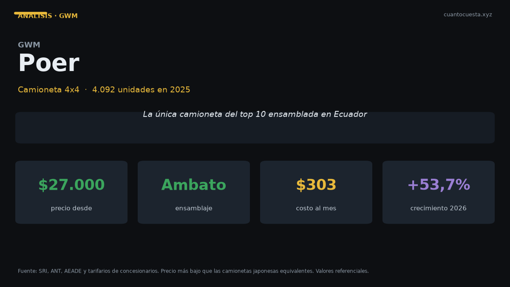

GWM Poer en Ecuador: análisis completo, costos y veredicto
La camioneta ensamblada en Ambato que rompió el precio del 4x4: 4.092 unidades en 2025. Precio, costos de operación y comparación con D-Max y Hilux.

La GWM Poer es la camioneta que rompió el precio del 4x4 en Ecuador: 4.092 unidades en 2025, la segunda más vendida del país. Cuesta entre $27.000 y $38.000, hasta $7.000 menos que la camioneta líder, y se ensambla en Ambato, en la planta de Ciauto.
Ese último dato es el que sostiene el argumento. GWM creció +53,7% en el primer semestre de 2026, en un mercado que ya de por sí marcó récord: 78.185 unidades en el semestre (+41,4%) y 14.412 en junio de 2026, el mejor mes de la historia. El precio no explica todo; el ensamblaje local explica el resto.
Ensamblar en Ecuador acorta la cadena de repuestos. Cuando el vehículo se arma en Ambato, no dependes de un contenedor que llega en seis semanas: dependes de una bodega nacional. En camionetas de trabajo, eso vale plata.
Ficha técnica
Las fichas publicadas no detallan las cifras mecánicas de la Poer. Igual que con la D-Max, aquí no inventamos números.
| Dato | GWM Poer |
|---|---|
| Segmento | Camioneta 4x4 |
| Motor | No especificado públicamente |
| Potencia | No especificado públicamente |
| Torque | No especificado públicamente |
| Transmisión | No especificado (varía por versión) |
| Consumo homologado | No publicado oficialmente |
| Combustible | Verificar por versión (diésel Premium a $3,15 el galón en el segmento) |
| Precio | $27.000 – $38.000 |
| Ensamblaje | Ambato, planta de Ciauto |
| Garantía | Verificar por versión en la agencia |
Pide en la agencia: potencia y torque, consumo homologado, número de airbags y cobertura exacta de garantía. Son cuatro preguntas que cualquier concesionario debe responder por escrito antes de que firmes.
Precio y versiones en Ecuador
| Rango | Precio de referencia |
|---|---|
| Entrada | $27.000 |
| Tope | $38.000 |
| Brecha contra la camioneta más vendida | hasta $7.000 menos |
El rango de $11.000 entre la versión más accesible y la más equipada refleja lo de siempre en camionetas: ahí se paga 4x4, cabina doble, caja automática y equipamiento. La entrada de $27.000 es la más baja del segmento de camionetas 4x4 de volumen en Ecuador.
Cuánto cuesta mantenerlo
Escenario: 12.000 km al año. El consumo no está publicado, así que usamos una estimación de 11 km/l para uso mixto con la referencia de diésel Premium a $3,15 el galón. Es una estimación declarada, no un dato oficial.
| Rubro anual | Rango estimado |
|---|---|
| Combustible (estimación 11 km/l) | ~$922 |
| Mantenimiento (aceite, filtros, alineación) | $600 – $900 |
| Matrícula (IPVM progresivo sobre avalúo) | $250 – $450 |
| Seguro (≈4% del valor) | $1.080 – $1.520 |
| Llantas (juego cada ~40.000 km) | $200 – $300 |
| Otros (lavado, imprevistos) | $100 – $200 |
| Total anual | $3.150 – $4.290 |
| Equivalente mensual | $263 – $358 |
Fíjate en la estructura del gasto: el seguro y el combustible suman cerca del 60% del costo anual. La camioneta más barata de comprar no es automáticamente la más barata de tener, pero una entrada $7.000 más baja sí libera capital de trabajo para una empresa.
Para comparar precios de taller: cambio de aceite y filtro $50–$90, filtro de combustible $30–$60, filtro de aire $20–$40, pastillas delanteras $80–$150, amortiguadores $200–$350, batería $100–$200, llanta $120–$250. En una camioneta de trabajo, la suma de pastillas, amortiguadores y llantas supera fácilmente los $800 en un año exigente.
El mantenimiento de una camioneta varía más por marca que por tamaño: una Hilux o RAV4 se mueve entre $300 y $600 al año por marca, mientras una RAM 1500 va de $800 a $1.200 y una Jeep de $700 a $1.000. Antes de comprar, pide el tarifario de servicios de los primeros 50.000 km.
Equipamiento y seguridad
Las fuentes consultadas no detallan equipamiento por versión de la Poer. Dos cosas sí se pueden afirmar sin inventar:
Primero, se ensambla en Ambato. Eso implica disponibilidad nacional de repuestos y tiempos de entrega más cortos que los de un vehículo importado completo.
Segundo, el volumen habla: 4.092 unidades en 2025 con un crecimiento de marca de +53,7% en el primer semestre de 2026 significa que hay una base instalada creciente. Más unidades en circulación atraen más talleres especializados y más stock de repuestos.
Para quién es y para quién no
Es para ti si:
- Necesitas una camioneta 4x4 y el precio de entrada es el criterio principal
- Usas el vehículo para trabajo o actividad productiva
- Valoras repuestos disponibles en el país por el ensamblaje local
- Quieres evitar una cuota que supere los $400 al mes
No es para ti si:
- Necesitas la mayor red de servicio posible en el país: Chevrolet y Toyota siguen delante
- La reventa a cinco años es tu prioridad número uno: la Hilux retiene mejor valor
- Exiges datos técnicos publicados antes de comprar
- Haces más ciudad que camino: una camioneta es un gasto innecesario
Comparación con sus rivales directos
| Modelo | Precio | Unidades 2025 | Dato clave |
|---|---|---|---|
| GWM Poer | $27.000 – $38.000 | 4.092 | Ensamblada en Ambato, la más barata |
| Chevrolet D-Max | $34.000 – $46.000 | 5.515 | La más vendida y mejor red de posventa |
| Toyota Hilux | $38.000 – $55.000 | 1.483 | Servicios más espaciados y mejor reventa |
La diferencia de entrada entre la Poer y la D-Max es de $7.000; contra la Hilux, de $11.000. Ese dinero, invertido en un negocio que use la camioneta como herramienta, pesa más que una diferencia de marca.
La contraparte es honesta: la D-Max vende 5.515 unidades y llega a ciudades intermedias con taller propio; la Hilux mantiene los intervalos de mantenimiento más largos del grupo y la mejor retención de valor en usados. La Poer gana en precio y en ensamblaje local.
Veredicto
La GWM Poer es la camioneta 4x4 con mejor relación precio-capacidad del mercado ecuatoriano. Entra $7.000 por debajo de la más vendida, se ensambla en Ambato y su marca creció 53,7% en el primer semestre de 2026.
No es la camioneta para quien compra pensando en reventa o en la red de servicio más extensa del país. Es la camioneta para quien necesita un 4x4 de trabajo hoy y no quiere pagar $7.000 más por la placa.
Si el criterio es trabajo y flujo de caja, la Poer es la cuenta que cierra. Si el criterio es reventa y red de servicio, paga la diferencia.
Precios referenciales de lista a septiembre de 2026. El consumo de la Poer no está publicado oficialmente; las cifras de combustible y matrícula son estimaciones declaradas. Varían precios por agencia y promoción. No constituye asesoría financiera.
Sigue leyendo
Chery Arrizo en Ecuador: análisis completo, costos y veredicto
Vendió 1.534 unidades en 2025 y Chery creció 50,1% en el primer semestre de 2026. Precio, repue
Chevrolet D-Max en Ecuador: análisis completo, costos y veredicto
Es la camioneta más vendida de Ecuador con 5.515 unidades en 2025. Precio, costo real de operac
Chevrolet Groove en Ecuador: análisis completo, costos y veredicto
El SUV más vendido de Ecuador: 4.063 unidades en 2025. Precio desde $19.999, cuota de $309 al m
Hyundai Grand i10 en Ecuador: análisis completo, costos y veredicto
Segundo auto de pasajeros más vendido de Ecuador con 1.690 unidades en 2025. Precio desde $13.9
Hyundai Tucson en Ecuador: análisis completo, costos y veredicto
Vendió 2.395 unidades en 2025 y arranca en $32.499. Motor 2.5 L, 6 airbags y garantía de 5 años
Cómo usamos estos datos
Las cifras de esta guía provienen de fuentes públicas oficiales y tarifarios de concesionarios publicados. Los valores son referenciales: tasas municipales, promociones y precios de repuestos varían. Verifica siempre en la entidad o concesionario antes de decidir.